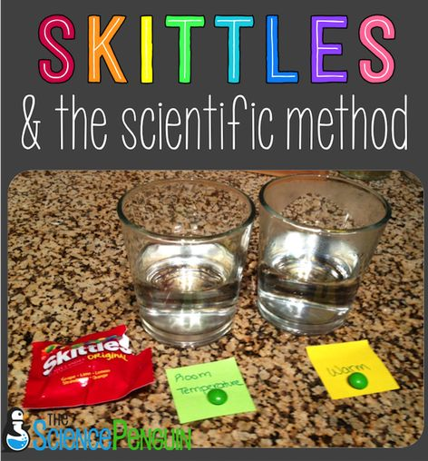
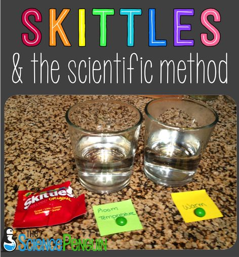

Welcome to Science Experiments
Explore fun and exciting science experiments!
.jpg)
.jpg) 



Making a lava lamp at home is a fun and easy science experiment that you can try using a few simple materials. To create your own DIY lava lamp, you'll need a clear plastic bottle or glass jar, vegetable oil, water, food coloring, and an effervescent tablet like Alka-Seltzer. First, fill the bottle about three-quarters of the way with vegetable oil, and then add water to fill the rest of the bottle, leaving some space at the top. Add a few drops of food coloring to give your lava lamp some color. Once the liquids have settled, drop in the effervescent tablet, which will cause the colored water to bubble up and create a mesmerizing lava-like effect as it rises and falls through the oil. This experiment shows how the difference in density between the oil and water, combined with the gas bubbles from the tablet, can create a visually stunning effect that mimics the flow of lava. Not only is it a cool science project, but it's also a great way to learn about liquids, density, and the behavior of gases... Read more
The Free Energy Water Pump experiment explores how renewable energy, like solar or wind power, can be used to pump water without relying on electricity or fuel. By using solar panels to convert sunlight into energy, the pump moves water efficiently, providing an eco-friendly solution for areas without access to power grids. This experiment highlights the importance of sustainable energy and demonstrates how simple, green technologies can solve real-world problems. It emphasizes the potential of free energy systems to improve water management while reducing environmental impact, offering a glimpse into the future of renewable energy applications... Read more